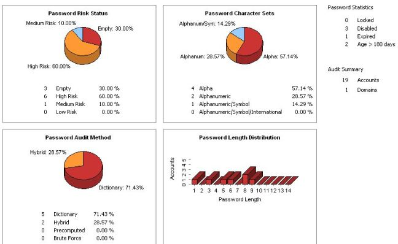

What's New in LC5
LC5 includes
enhancements and additions to the critically-acclaimed L0phtCrack auditor:
- Password Scoring:
LC5 provides a scoring metric to quickly assess password quality.
Passwords are measured against current industry best practices, and are
rated as Strong, Medium, Weak, or Fail.
- Pre-computed Dictionary Support:
Pre-computed password files is a new advance in password auditing. LC5
now supports pre-computed password hashes. Password audits now take
minutes instead of hours or days.
- Unix Password Support:
LC5 imports and cracks Unix password files. Perform network audits from
a single interface.
- Remote password retrieval:
LC5 has a built-in ability to import passwords from remote Windows and
Unix machines, where previous versions of LC required a third-party
utility.
- Scheduled Scans:
System administrators can schedule routine audits with LC5. Audits can
be performed daily, weekly, monthly, or just once, depending on the
organization's auditing requirements.
- Remediation:
LC5 offers remediation assistance to system administrators on how to
take action against accounts that have poor passwords. Accounts can be
disabled, or the passwords can be set to expire from within the LC5
interface. Remediation works for Windows user accounts only.
- Updated GUI:
The user interface is improved and updated. More information is
available about each user account, including password age, lock-out
status, and whether the account is disabled, expired, or never expires.
Information on LC5's current session is provided in an "immediate
window" with a reporting tab providing up-to-the-minute status of
the current auditing session.
- Improved
reporting:
LC5 includes
improved reporting. LC5 now has real-time reporting that is displayed in a
separate, tabbed interface. Auditing results are displayed based on
auditing method, risk severity, and password character sets.
Displays risk status in four different categories:
Empty, High Risk, Medium Risk, and Low Risk.
Displays the completion of all four methods LC5 uses:
Dictionary, Hybrid, Precomputed, and Brute Force.
Reports the completion of the various character sets
being audited, including, Alpha, Alphanumeric, Alphanumeric/Symbol,
Alphanumeric/Symbol/International.
- Password
Length Distribution
Reports the overall length of the discovered password by
account.

The
Summary Report in LC5 shows the Password Statistics as Locked,
Disabled, Expired, or if the password is older than 180 days. The Audit
Summary shows the number of Accounts cracked and the number of Domains
audited.
- Foreign
Password Cracking:
LC5 supports foreign character sets for Brute Force, as well as foreign
dictionary files. Pull down menus change for language and character set.
LC5 ships with several foreign dictionaries.
|